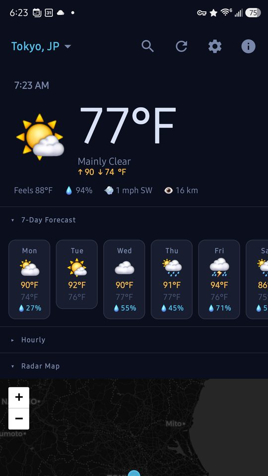
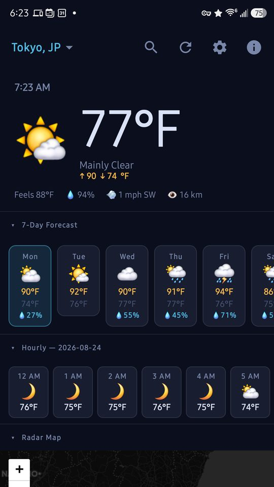
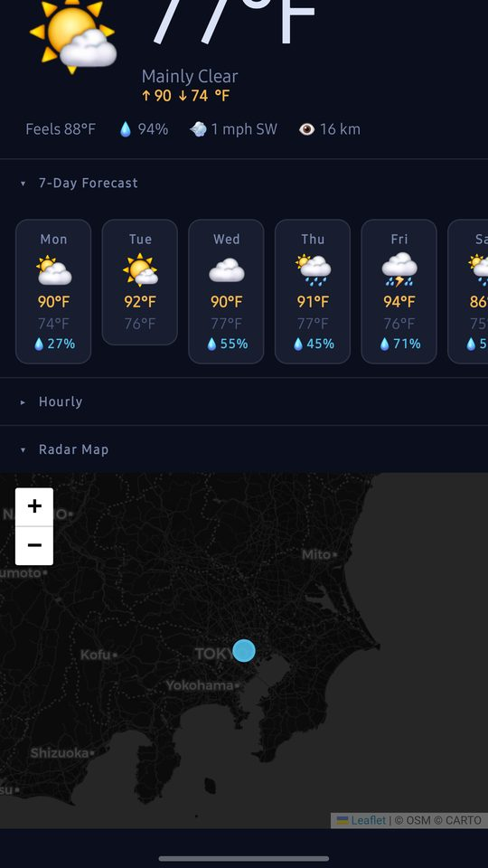
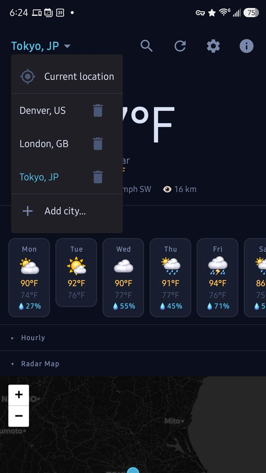
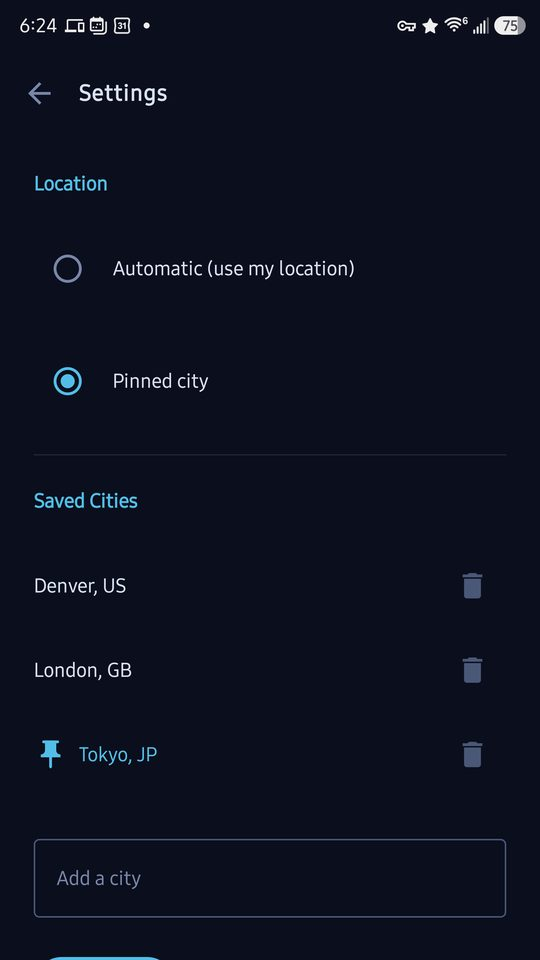

Weather worth looking at
Live precipitation radar, a seven-day forecast, and hour-by-hour detail — for as many cities as you want to follow. Each one shows its own local time, so you always know what time it is where you're looking.
Free · No account · No ads · No tracking · Android 8.0+





What it does
Live radar
Precipitation radar on a dark map, refreshed every few minutes, centred on whichever city you're viewing.
Seven-day forecast
Daily highs, lows and chance of rain. Tap any day to open its hour-by-hour breakdown.
As many cities as you like
Save any number of places and switch between them from the title bar.
Each city's own clock
Look at Tokyo from Boston and you see Tokyo's time — in 12- or 24-hour format, your choice.
Finds you automatically
Follows your current city by default, or pin one and stay there. Decline the location permission and it still works.
Nothing to sign up for
No account, no ads, no analytics, no tracking. Your saved cities never leave your phone.
Where the data comes from
Open-Meteo
Forecasts and city lookup. Free and open, no API key.
RainViewer
The precipitation radar tiles.
CARTO & OpenStreetMap
The dark base map under the radar.